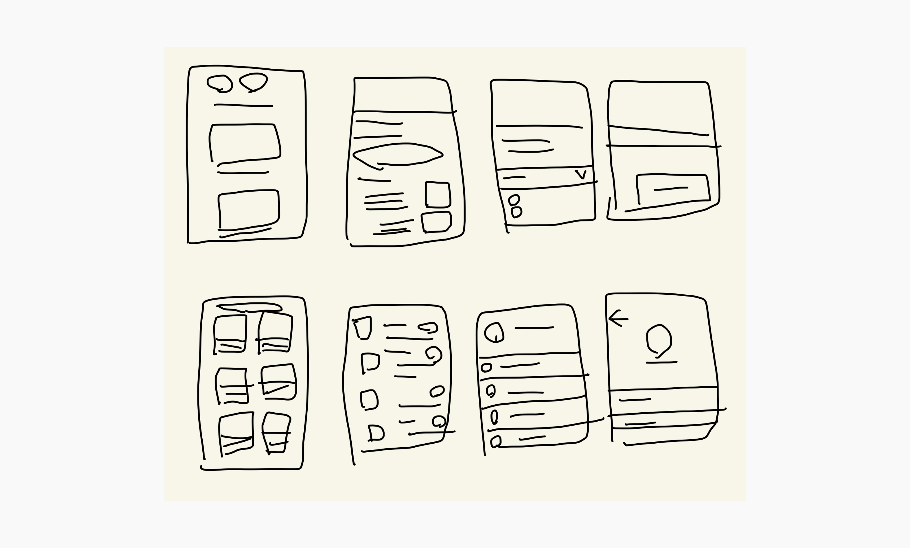

This is a food delivery app I designed.
It is for iOS. My goal was to make ordering food fun and easy.

-Flows and Screens-

The main flow I spent the most time designing was the check out flow. I wanted to make sure each step between picking your food and getting it to your door was quick and delightful.

I introduced a “popular” tag to make it easier to find good food faster.

At the end of the flow, users are asked to rate their experience. I decied to use large shapes and simple layout to create an enjoyable and positive moment.
-Visual design process-
For icons, I decided to use the Material Design icon set. I chose this icon family because of its simple lines, and simple for engineers to use as well.

I decided to use warm and neutral colors to create a relaxed and inviting vibe. I also wanted the app to look and feel different from other apps in the industry.